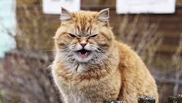
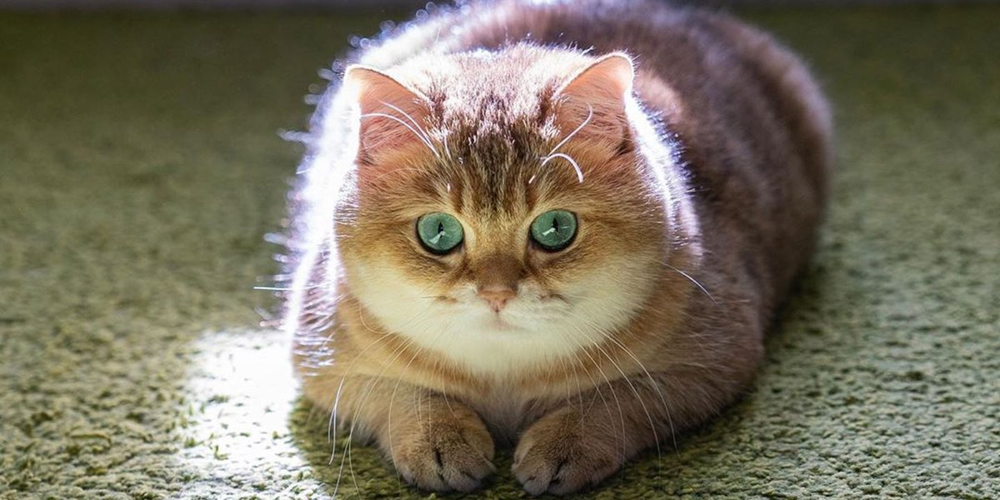

О котах

Происхождение и история одомашнивания
Согласно генетическому исследованию аутосомных маркеров и митохондриальной ДНК 979 домашних, диких и одичавших кошек с трёх континентов,
в том числе барханных кошек (Felis margarita), все домашние кошки по материнской линии происходят как минимум от пяти представительниц
подвида степная кошка (Felis silvestris lybica), имеющих разные гаплотипы митохондриальной ДНК. В митохондриальной гаплогруппе IV,
специфической для ближневосточных и домашних кошек, идентифицировали 6 субклад и рассчитали время жизни общего предка — ок. 13 тыс.
лет назад, что значительно превышает время предполагаемого одомашнивания ближневосточных кошек[31][32]. Генетический анализ
митохондриальной ДНК 209 кошек из 30 захоронений на территории Европы, Ближнего Востока и Северной Африки показал, что домашние
кошки распространялись по миру двумя большими волнами. Первая волна имела место на заре сельского хозяйства 12—9 тыс. лет назад
— в Плодородном полумесяце и его окрестностях домашние кошки расселились вместе с земледельцами по всему Ближнему Востоку. Несколько
тысяч лет спустя вторая волна, вышедшая из Египта, охватила практически всю Европу и Северную Африку[33][34][35].
Обособление подвида Felis silvestris lybica произошло около 130 тысяч лет назад. Степная кошка до сих пор распространена по всей
Северной Африке и в обширной зоне от Средиземноморья до Китая, где она обитает в зарослях саксаула в пустынях, в кустарниках
возле водоёмов, в предгорьях и горах. Хотя мелкие дикие кошки разных подвидов могут скрещиваться между собой и давать потомство,
результаты генетических исследований показали, что в филогенезе домашней кошки другие подвиды Felis silvestris, кроме степной кошки,
участия не принимали[36].
Одомашнивание кошки произошло примерно 9500 лет назад на Ближнем Востоке в районе Плодородного полумесяца, где зародились и развивались
древнейшие человеческие цивилизации[37]. Одомашнивание кошки началось при переходе человека к оседлому образу жизни, с началом развития
земледелия, когда появились излишки пищи и возникла необходимость их сохранения и защиты от грызунов[38].
Древнейшее археологическое свидетельство одомашнивания кошки было обнаружено на Кипре, где в ходе археологических раскопок было найдено
совместное захоронение человека и кошки, которое датируется 7500 годом до н. э.[39][40] Также было установлено, что остров Кипр был
колонизирован выходцами из районов современных Анатолии (Турция) и Сирии[41].
Ранее учёные полагали, что первыми одомашнили кошек древние египтяне. Однако самые ранние свидетельства приручения кошек древними египт
янами относились к 2000—1900 годам до нашей эры. А недавно было установлено, что в Древний Египет домашняя кошка попала, как и на Кипр,
из Плодородного полумесяца[42] (Анатолии). В настоящее время кошка является одним из самых популярных домашних животных[43].
Несмотря на то, что кошки были одомашнены достаточно давно, большинство кошек способны выживать в условиях нахождения вне человеческого
жилья, пополняя ряды вторично одичавших кошек, так как в условиях бродячей жизни кошки обычно быстро повторно дичают.
Вторично одичавшие кошки часто живут уединённо и охотятся в одиночку, но иногда образуют небольшие колонии из нескольких самок с котятами.
Вопрос о полном одомашнивании
В наше время среди учёных нет точного ответа, является ли кошка полностью одомашненным животным, так как, например,
собака в процессе одомашнивания изменила свою модель поведения, сумев развить довольно сильную привязанность и
преданность к человеку и одновременно утратила множество способностей к охотничьему образу жизни и сигнальному
общению, присущего его предкам — волкам[44][неавторитетный источник?]. Кошка же по поведению почти не отличается
от своего дикого предка, демонстрируя высокую независимость и повадки «одинокого хищника»[44][неавторитетный источник?].
Некоторые учёные считают, что кошка и вовсе не является одомашненным животным, а сама могла прийти к человеку, так как в
селениях всегда в достатке водились синантропные животные или, проще говоря, многочисленные грызуны и птицы. Таким образом,
кошка нашла для себя удобный источник пищи, закрепившись в «новой нише». Сосуществование человека и кошки было взаимовыгодным,
так как человек избавлялся от грызунов, которые часто становились источником заболеваний и порчи хозяйства[44][неавторитетный
источник?][45]. Также весомым доводом противников идеи одомашнивания остаётся тот факт, что, по их мнению, кошка показывает
любопытство к человеку только до тех пор, пока ей это выгодно, то есть маленький хищник не способен на верность[44]
[неавторитетный источник?]. Другие же учёные продвигают иную точку зрения. По их мнению, тот факт, что кошки подвергались
одомашниванию, подтверждается тем, что они способны на привязанность и игривое поведение, и именно для установления
эмоционального контакта с человеком научились мурлыкать. Многие кошки показывают свою привязанность, устанавливая
физический контакт с человеком, например, забираясь ему на колени; известны случаи, когда преданность кошки хозяину была
сильнее, чем у многих собак, и это на фоне того, что кошки произошли из «опаснейших и неприветливейших хищников в мире».
На негативный образ кошки как дикого и подозрительного животного повлиял и продолжает влиять тот факт, что в средневековой
Европе Католическая церковь обвинила кошек в связи с дьяволом и колдовством[44][неавторитетный источник?].
Несмотря на споры, большинство учёных сошлись во мнении, что кошка является полуодомашненным животным, то есть она способна
на сосуществование с человеком, но, потеряв с ним контакт, легко возвращаются к дикому образу существования[44]
[неавторитетный источник?]. Хотя у кошки наблюдаются генетические изменения в сравнении с диким предком, эта
разница в 10 раз меньше, чем у собак с волками[44][неавторитетный источник?]. Учёные считают, что дикая кошка
действительно могла сама прийти к человеку, чтобы питаться грызунами, а такие отношения характеризовались
как соседские, и уже через несколько тысяч лет люди сами стали одомашнивать маленьких хищников[45].
Это также вероятно объясняет, почему модель поведения кошки почти не изменилась, так как, например,
при одомашнивании собаки из волка человек изменил её образ жизни и среду обитания, а кошка же претерпела
минимальные изменения[45]. С одной стороны, кошка сумела сохранить модель поведения, присущую её диким предкам.
Она почти так же хорошо охотится, как дикая кошка, но в то же время способна мирно сосуществовать
с человеком, проявлять к нему эмоциональную привязанность, нежность или даже выказывать игривое поведение[44]
[неавторитетный источник?].

Топ 5 фильмов 2019 года
Досье по игре ARK